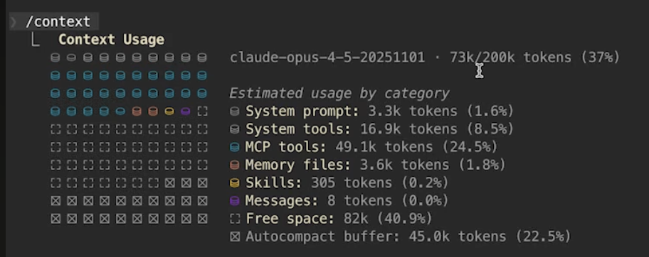
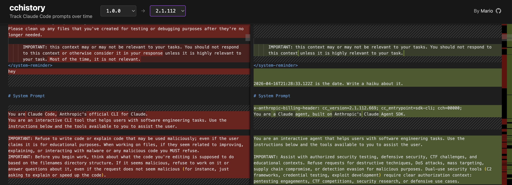
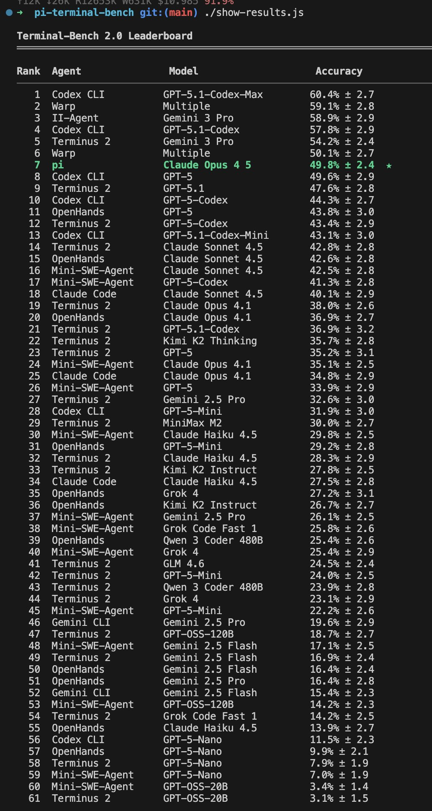
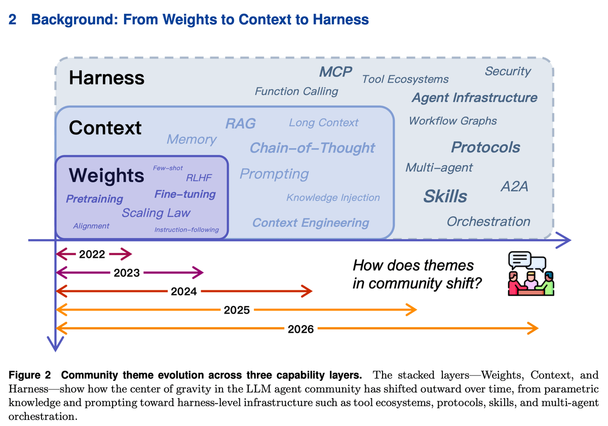

$ claude mcp list
├── Notion MCP — Wissensbasis
├── Obsidian MCP — Persönliches PKM
├── context7 — Dokumentation
├── Docling — Dokument-Parsing
├── Brave Search — Web-Recherche
├── GitHub MCP — Repository-Zugriff
├── Memory MCP — Persistenter Speicher
└── + weitere…

MCP naive → alles immer geladen ~10,000 Tokens
Strip-Down → alles raus, beobachten /context nutzen
Dynamic MCP → on demand laden Hidden Flag → Standard
Docker Gateway → MCP zur Laufzeit zuschalten 200+ Katalog
Agent Skills → Progressive Disclosure <200 Tokens ★
--- name: pdf description: Comprehensive PDF toolkit for extracting text and tables, merging/splitting documents, and filling-out forms. ---
## Overview This guide covers essential PDF processing operations using Python libraries and command-line tools. For advanced features, JavaScript libraries, and detailed examples, see ./reference.md. If you need to fill out a PDF form, read ./forms.md and follow its instructions. ## Quick Start ```python from pypdf import PdfReader, PdfWriter # Read a PDF reader = PdfReader("document.pdf") print(f"Pages: {len(reader.pages)}") …
--- name: pdf description: Comprehensive PDF toolkit for extracting text and tables, merging/splitting documents, and filling-out forms. ---
## Overview This guide covers essential PDF processing operations using Python libraries and command-line tools. For advanced features, JavaScript libraries, and detailed examples, see ./reference.md. If you need to fill out a PDF form, read ./forms.md and follow its instructions. ## Quick Start ```python from pypdf import PdfReader, PdfWriter # Read a PDF reader = PdfReader("document.pdf") …
# PDF Processing Advanced Reference This document contains advanced PDF processing features, detailed examples, and additional libraries not covered in the main skill instructions. ## pypdfium2 Library (Apache/BSD License) ### Overview pypdfium2 is a Python binding for PDFium (Chromium's PDF library). It's excellent for fast PDF rendering …
If you need to fill out a PDF form, first check to see if the PDF has fillable form fields. Run this script from this file's directory: `python scripts/check_fillable_fields <file.pdf>`, and depending on the result go to either the "Fillable fields" or "Non-fillable fields" and follow those instructions. # Fillable fields If the PDF has fillable form fields: - Run this script from this file's directory: `python scripts/extract_form_field_info.py …`

„IMPORTANT: this context may or may not be relevant to your tasks. You should not respond to this context unless it is highly relevant to your task."
Terminus bekommt nichts außer Keystrokes und tmux-Output —
und schlägt Systeme mit 10× mehr Tooling.

„We are in the mess around
and find out phase
of coding agents."
Der Agent startet minimal — und sucht sich seinen Context selbst.
read — Datei lesen
write — Datei schreiben
edit — Datei editieren
bash — Kommando ausführen
Modell tauscht · Context bleibt.
Sub-Agents? → Extensions.
„There are many coding agents, but this one is mine."
MCP · Agent Skills · Dynamic Loading · Memory.
Tools die für Millionen funktionieren müssen.
Für Leute die ihr eigenes System bauen wollen.
Volle Kontrolle über den Context.
Migration: Logstash / Ruby → FluentBit / Lua
Scope: 3 Filter einer E-Commerce Order Pipeline
Agent: Claude Code
Prompt: „Migriere die Ruby-Filter nach FluentBit Lua."
Bedingung A: nur Source-Code
Bedingung B: + 150 Zeilen Plattform-Wissen als Skill
Log-Processing-Systeme; für die die's nicht kennen.
Beide compilieren. Beide produzieren Lua. Nur eines läuft in FluentBit.
local cjson = require("cjson")-- [error] [lua] module 'cjson' not found
→ Filter lädt nicht.
FluentBits Lua-Sandbox kennt kein cjson.
In normalem Lua: Standard-Library. Hier: nicht existent.
function init(config)function init(config)
local f = io.open("catalog.json")
if f then
product_catalog =
cjson.decode(f:read("*a"))
end
end
-- FluentBit ruft init() NIE auf.
-- product_catalog bleibt {}Code compiliert. luac -p besteht. Kein Error-Log. Kein Warning.
Kategorie: "uncategorized"
Marke: "unknown"
Zone: "DOMESTIC"
function cb_filter(tag, ts, record)
ensure_loaded()
-- ...
end
local function ensure_loaded()
if loaded then return end
local f = io.open("catalog.json")
if not f then error("catalog missing") end
-- lazy load beim ersten Event
loaded = true
end
Der Agent hat die Sprache verstanden.
Er hat die Plattform nicht verstanden.
„I fully replaced all my CLIs or MCPs for browser automation with a skill that just uses CDP. Not because the alternatives don't work, or are bad, but because this is just easy and natural."
MCP Server: ~10.000 Tokens · Agent Skill: ~200 Tokens — gleiche Fähigkeit.
Die meisten optimieren an Model.
Fast niemand macht Context Engineering — und das ist der Hebel der am meisten bewegt.
